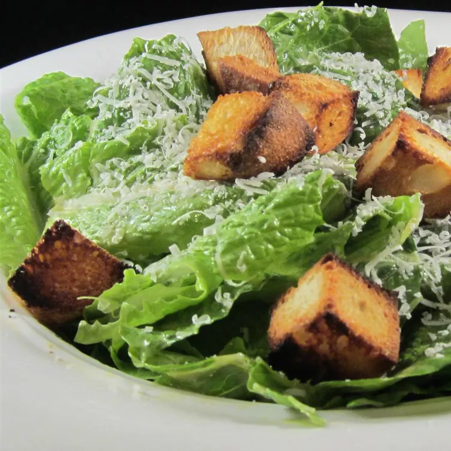

Classic Restaurant Caesar Salad

Description
This is the best Caesar salad you would ever have! If having
trouble getting the anchovy to mash, add a couple of croutons.
They provide sort of an anti-skid surface, and the hard edges
of the croutons cut into the anchovy.
Ingredients
- 2 cloves garlic, finely chopped
- 3 anchovy fillets
- 1/2 lemon,juiced
- 2 tablespoon red wine vinegar
- 1 tablespoon Dijon mustard
- 1 egg yolk
- 1 dash Worcestershire sauce
- 1/4 cup olive oil
- 1 pinch salt and ground black pepper to taste
- 1/2 head romaine lettuce, chopped
- 1/4 cup grated Parmesan cheese
- 2 tablespoons croutons
How to make Mac and Cheese
- Mash garlic with anchovies in a large salad
bowl. Whisk lemon juice, red wine vinegar, Dijon mustard,
egg yolk, and Worcestershire sauce into the anchovy mixture
until mixture is smooth and creamy. Gradually whisk olive oil
into the dressing, pouring the oil into the dressing in a
thin stream while stirring constantly. Season with salt and
black pepper.
- Gently mix romaine lettuce and Parmesan cheese into
the dressing until thoroughly coated; serve salad topped with croutons.
Return to main page